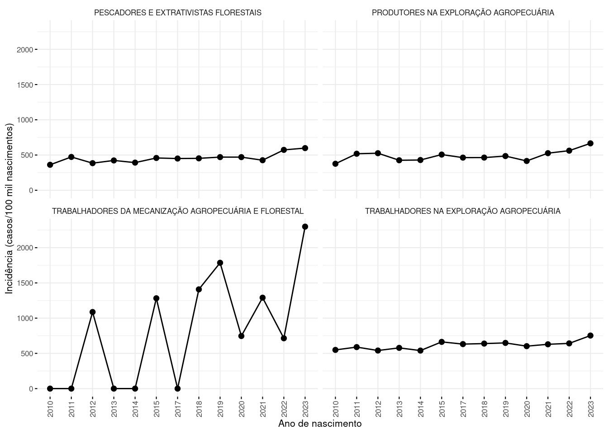

cbo = tabCBO %>%mutate(cbo_grande_grupo =substr(cod, start =1, stop =1)) %>%mutate(cbo_subgrupo_principal =substr(cod, start =1, stop =2)) %>%relocate(cbo_grande_grupo, .before = cod) %>%relocate(cbo_subgrupo_principal, .before = cod) %>%mutate(cbo_grande_grupo_desc =case_when(cbo_grande_grupo =="0"~"Forças armadas,policiais e bombeiros militares", cbo_grande_grupo =="1"~"Membros superiores do poder público, dirigentes de org. de empresas e gerentes", cbo_grande_grupo =="2"~"Profissionais das ciências e das artes", cbo_grande_grupo =="3"~"Técnicos do nível médio", cbo_grande_grupo =="4"~"Trab. de serviços administrativos", cbo_grande_grupo =="5"~"Trab. dos servuços, vendedores do comércio em lojas e mercados", cbo_grande_grupo =="6"~"Trab. agropecuários,florestais, da caça e pesca", cbo_grande_grupo =="7"~"Trab. da produção de bens e serviços industrias 1", cbo_grande_grupo =="8"~"Trab. da produção de bens e serviços industriais 2", cbo_grande_grupo =="9"~"Trab. de manutenção e reparo")) %>%group_by(cbo_grande_grupo) %>%mutate(cbo_subgrupo_desc =case_when(cbo_subgrupo_principal =="01"~"MEMBROS DAS FORÇAS ARMADAS", cbo_subgrupo_principal =="02"~"POLICIAIS MILITARES", cbo_subgrupo_principal =="03"~"BOMBEIROS MILITARES", cbo_subgrupo_principal =="11"~"MEMBROS SUPERIORES E DIRIGENTES DO PODER PÚBLICO", cbo_subgrupo_principal =="12"~"DIRIGENTES DE EMPRESAS E ORGANIZAÇÕES (EXCETO DE INTERESSE PÚBLICO)", cbo_subgrupo_principal =="13"~"DIRETORES E GERENTES EM EMPRESA DE SERVIÇOS DE SAÚDE, DA EDUCAÇÃO, OU DE SERVIÇOS CULTURAIS, SOCIAIS OU PESSOAIS", cbo_subgrupo_principal =="14"~"GERENTES", cbo_subgrupo_principal =="20"~"PESQUISADORES E PROFISSIONAIS POLICIENTÍFICOS", cbo_subgrupo_principal =="21"~"PROFISSIONAIS DAS CIÊNCIAS EXATAS,FÍSICAS E DA ENGENHARIA", cbo_subgrupo_principal =="22"~"PROFISSIONAIS DAS CIÊNCIAS BIOLÓGICAS,DA SAÚDE E AFINS", cbo_subgrupo_principal =="23"~"PROFISSIONAIS DO ENSINO", cbo_subgrupo_principal =="24"~"PROFISSIONAIS DAS CIÊNCIAS JURÍDICAS", cbo_subgrupo_principal =="25"~"PROFISSIONAIS DAS CIÊNCIAS SOCIAIS E HUMANAS", cbo_subgrupo_principal =="26"~"COMUNICADORES, ARTISTAS E RELIGIOSOS", cbo_subgrupo_principal =="27"~"PROFISSIONAIS EM GASTRONOMIA", cbo_subgrupo_principal =="30"~"TÉCNICOS POLIVALENTES", cbo_subgrupo_principal =="31"~"TÉCNICOS DE NÍVEL MÉDIO DAS CIÊNCIAS FÍSICAS,QUÍMICAS, ENGENHARIA E AFINS", cbo_subgrupo_principal =="32"~"TÉCNICOS DE NÍVEL MÉDIO DAS CIÊNCIAS BIOLÓGICAS, BIOQUÍMICAS, DA SAÚDE E AFINS", cbo_subgrupo_principal =="33"~"PROFESSORES LEIGOS E DE NÍVEL MÉDIO", cbo_subgrupo_principal =="34"~"TÉCNICOS DE NÍVEL MÉDIO EM SERVIÇOS DE TRANSPORTES", cbo_subgrupo_principal =="35"~"TÉCNICOS DE NIVEL MÉDIO NAS CIÊNCIAS ADMINISTRATIVAS", cbo_subgrupo_principal =="36"~"TÉCNICOS EM NIVEL MÉDIO DOS SERVIÇOS CULTURAIS, DAS COMUNICAÇÕES E DOS DESPORTOS", cbo_subgrupo_principal =="37"~"TÉCNICOS EM NIVEL MÉDIO DOS SERVIÇOS CULTURAIS, DAS COMUNICAÇÕES E DOS DESPORTOS", cbo_subgrupo_principal =="39"~"OUTROS TÉCNICOS DE NÍVEL MÉDIO", cbo_subgrupo_principal =="41"~"ESCRITURÁRIOS", cbo_subgrupo_principal =="42"~"TRABALHADORES DE ATENDIMENTO AO PÚBLICO", cbo_subgrupo_principal =="51"~"TRABALHADORES DOS SERVIÇOS", cbo_subgrupo_principal =="52"~"VENDEDORES E PRESTADORES DE SERVIÇOS DO COMÉRCIO", cbo_subgrupo_principal =="61"~"PRODUTORES NA EXPLORAÇÃO AGROPECUÁRIA", cbo_subgrupo_principal =="62"~"TRABALHADORES NA EXPLORAÇÃO AGROPECUÁRIA", cbo_subgrupo_principal =="63"~"PESCADORES E EXTRATIVISTAS FLORESTAIS", cbo_subgrupo_principal =="64"~"TRABALHADORES DA MECANIZAÇÃO AGROPECUÁRIA E FLORESTAL", cbo_subgrupo_principal =="71"~"TRABALHADORES DA INDÚSTRIA EXTRATIVA E DA CONSTRUÇÃO CIVIL", cbo_subgrupo_principal =="72"~"TRABALHADORES DA TRANSFORMAÇÃO DE METAIS E DE COMPÓSITOS", cbo_subgrupo_principal =="73"~"TRABALHADORES DA FABRICAÇÃO E INSTALAÇÃO ELETROELETRÔNICA", cbo_subgrupo_principal =="74"~"MONTADORES DE APARELHOS E INSTRUMENTOS DE PRECISÃO E MUSICAIS", cbo_subgrupo_principal =="75"~"JOALHEIROS, VIDREIROS, CERAMISTAS E AFINS", cbo_subgrupo_principal =="76"~"TRABALHADORES NAS INDÚSTRIAS TÊXTIL, DO CURTIMENTO, DO VESTÚARIO E DAS ARTES GRÁFICAS", cbo_subgrupo_principal =="77"~"TRABALHADORES DAS INDÚSTRIAS DE MADEIRA E DO MOBILIÁRIO", cbo_subgrupo_principal =="78"~"TRABALHADORES DE FUNÇÕES TRANSVERSAIS", cbo_subgrupo_principal =="79"~"TRABALHADORES DO ARTESANATO", cbo_subgrupo_principal =="81"~"TRABALHADORES EM INDÚSTRIAS DE PROCESSOS CONTÍNUOS E OUTRAS INDÚSTRIAS", cbo_subgrupo_principal =="82"~"TRABALHADORES DE INSTALAÇÕES SIDERÚRGICAS E DE MATERIAIS DE CONSTRUÇÃO", cbo_subgrupo_principal =="83"~"TRABALHADORES DE INSTALAÇÕES E MÁQUINAS DE FABRICAÇÃO DE CELULOSE E PAPEL", cbo_subgrupo_principal =="84"~"TRABALHADORES DA FABRICAÇÃO DE ALIMENTOS, BEBIDAS E FUMO", cbo_subgrupo_principal =="86"~"OPERADORES DE PRODUÇÃO, CAPTAÇÃO,TRATAMENTO E DISTRIBUIÇÃO (ENERGIA, ÁGUA E UTILIDADES)", cbo_subgrupo_principal =="91"~"TRABALHADORES EM SERVIÇOS DE REPARAÇÃO E MANUTENÇÃO MECÂNICA", cbo_subgrupo_principal =="95"~"POLIMANTENEDORES", cbo_subgrupo_principal =="99"~"OUTROS TRABALHADORES DA CONSERVAÇÃO,MANUTENÇÃO E REPARAÇÃO", ))
Plots
Code
#total de anomalias por ano, segundo o tipo de anomaliafigure1 = sinasc %>%mutate(ano_nasc =year(dtnasc)) %>%group_by(ano_nasc, anomal_categ) %>%count() %>%filter(anomal_categ !="sem_anomalia") %>%bind_rows(., sinasc %>%mutate(ano_nasc =year(dtnasc)) %>%group_by(ano_nasc, idanomal) %>%count() %>%filter(idanomal =="Sim") %>%rename(anomal_categ = idanomal) %>%mutate(anomal_categ =gsub("Sim", "anomalias congênitas", anomal_categ))) %>%ggline(data = .,x ="ano_nasc",y ="n",color ="anomal_categ",legend_title=NULL,xlab ="Ano de nascimento", ylab ="Número de casos") +scale_y_continuous(breaks =seq(from =0, to =30000,by =5000))+labs(color =NULL)figure1
Warning: Removed 2 rows containing missing values or values outside the scale range
(`geom_point()`).
Code
#filename=incidencia_por_estadolibrary(RColorBrewer)cores_estados <-brewer.pal(n =27, name ="Paired")
Warning in brewer.pal(n = 27, name = "Paired"): n too large, allowed maximum for palette Paired is 12
Returning the palette you asked for with that many colors
Code
nomes_estados <-c("Amazonas", "Roraima", "Amapá", "Pará", "Tocantins", "Rondônia", "Acre", "Maranhão", "Piauí", "Ceará", "Rio Grande do Norte", "Pernambuco", "Paraíba", "Sergipe", "Alagoas", "Bahia", "Mato Grosso", "Mato Grosso do Sul", "Goiás", "Distrito Federal", "São Paulo", "Rio de Janeiro", "Espírito Santo", "Minas Gerais", "Paraná", "Rio Grande do Sul", "Santa Catarina")n_estados <-length(nomes_estados)cores_estados <-rep(cores_estados, length.out = n_estados)cores_estados <-setNames(cores_estados, nomes_estados)figure5_1 <- sinasc %>%mutate(ano_nasc =year(dtnasc)) %>%group_by(ano_nasc, mun_res_uf, idanomal) %>%count() %>%pivot_wider(names_from = idanomal,values_from = n) %>%rowwise() %>%mutate(incidencia = (sim/(sim + não)) *1e5) %>%drop_na(mun_res_uf) %>%mutate(regiao =case_when( mun_res_uf %in%c("Amazonas","Roraima","Amapá","Pará","Tocantins","Rondônia","Acre") ~"Norte", mun_res_uf %in%c("Maranhão","Piauí","Ceará","Rio Grande do Norte","Pernambuco","Paraíba","Sergipe","Alagoas","Bahia") ~"Nordeste", mun_res_uf %in%c("Mato Grosso","Mato Grosso do Sul","Goiás", "Distrito Federal") ~"Centro-Oeste", mun_res_uf %in%c("São Paulo","Rio de Janeiro","Espírito Santo","Minas Gerais") ~"Sudeste", mun_res_uf %in%c("Paraná" ,"Rio Grande do Sul","Santa Catarina") ~"Sul" )) %>%ggline(data = .,x ="ano_nasc",y ="incidencia",color ="mun_res_uf",facet.by ="regiao",ggtheme =theme_minimal(base_size =8), legend_title =NULL,xlab ="Ano de nascimento",ylab ="Incidência",palette = cores_estados) +rotate_x_text()+labs(color =NULL)figure5_1
Warning: No shared levels found between `names(values)` of the manual scale and the
data's fill values.
Code
#Idade#filename=incidencia_idadefigure6 = sinasc %>%mutate(ano_nasc =year(dtnasc)) %>%mutate(faixa_etaria_mae =case_when(idademae <18~"menor de 18", idademae >=18& idademae <35~"de 18 a 34", idademae >=35~"maior ou igual a 35",is.na(idademae) ==TRUE~"não informado")) %>%mutate(faixa_etaria_mae =fct(faixa_etaria_mae, c("menor de 18", "de 18 a 34", "maior ou igual a 35", "não informado"))) %>%group_by(ano_nasc, faixa_etaria_mae, idanomal) %>%count() %>%pivot_wider(names_from = idanomal,values_from = n) %>%mutate(incidencia = (sim/(sim+não))*1e5) %>%filter(faixa_etaria_mae !="não informado") %>%ggline(x ="ano_nasc",y ="incidencia",color ="faixa_etaria_mae",xlab ="Ano de nascimento", ylab ="Incidência (casos/100 mil nascimentos)") +rotate_x_text() +labs(color =NULL)figure6
Warning in left_join(., cbo2, join_by(codocupmae == nome)): Detected an unexpected many-to-many relationship between `x` and `y`.
ℹ Row 3056 of `x` matches multiple rows in `y`.
ℹ Row 1659 of `y` matches multiple rows in `x`.
ℹ If a many-to-many relationship is expected, set `relationship =
"many-to-many"` to silence this warning.
Warning in left_join(., cbo2, by = c(codocupmae = "nome")): Detected an unexpected many-to-many relationship between `x` and `y`.
ℹ Row 3056 of `x` matches multiple rows in `y`.
ℹ Row 1659 of `y` matches multiple rows in `x`.
ℹ If a many-to-many relationship is expected, set `relationship =
"many-to-many"` to silence this warning.
Code
figure17

Code
#Escolaridadefigure8 = sinasc %>%mutate(ano_nasc =year(dtnasc)) %>%mutate(escmaeagr1 =case_when(is.na(escmae) ~"não informado", escmae %in%c("Nenhum", "nenhum", "Nenhuma") ~"Nenhum", escmae %in%c("1 a 3 anos") ~"1 a 3 anos", escmae %in%c("4 a 7 anos") ~"4 a 7 anos", escmae %in%c("8 a 11 anos") ~"8 a 11 anos", escmae %in%c("Ignorado") ~"Ignorado" )) %>%mutate(escmaeagr_1 =fct_relevel(escmaeagr1, c("Nenhum", "1 a 3 anos", "4 a 7 anos", "8 a 11 anos", "Ignorado"))) %>%group_by(ano_nasc, escmaeagr_1, idanomal) %>%count() %>%pivot_wider(names_from = idanomal, values_from = n) %>%mutate(incidencia = (sim / (sim + não)) *1e5) %>%filter(escmaeagr_1 !="não informado") %>%# Filtra para remover "não informado"ggline(x ="ano_nasc",y ="incidencia",color ="escmaeagr_1",xlab ="Ano de nascimento", ylab ="Incidência (casos/100 mil nascimentos)") +rotate_x_text() +labs(color =NULL)
Warning: There was 1 warning in `mutate()`.
ℹ In argument: `escmaeagr_1 = fct_relevel(...)`.
Caused by warning:
! 1 unknown level in `f`: Ignorado